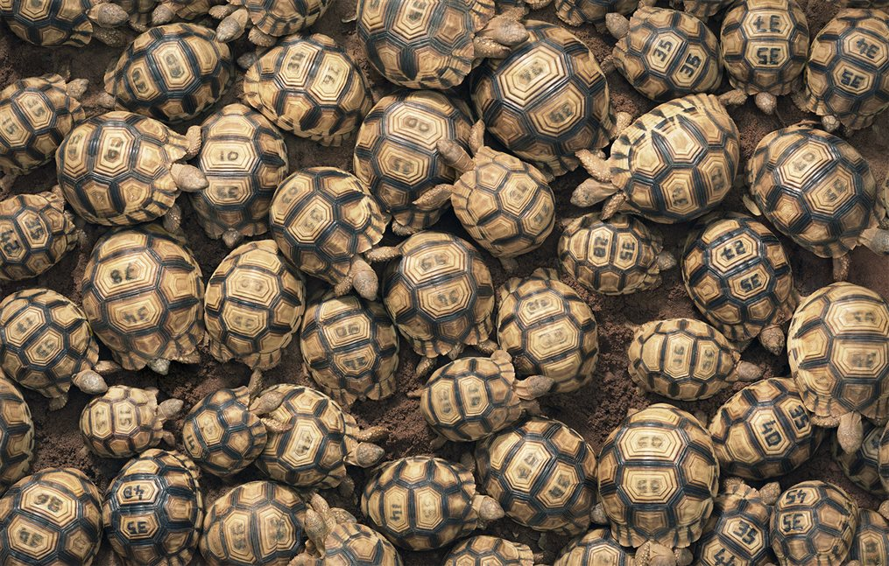

VIVE
Tortuga angonoka


Dirección. Colombia, Pereira-Risaralda
Contacto propietario.
Correo electronico. Juan.lugo@itspereira.edu.co
Telefono (phone). +57 3233424060
VIVETortuga angonoka |
||
|
|
La tortuga más rara del mundo tarda 15 años en alcanzar la edad de cría. Esto hace que cada huevo robado, o cada árbol o arbusto talado sea un revés aplastante para esta especie al borde de la extinción. Se creía que la tortuga angonoka - Astrochelys yniphora- ya había desaparecido, pero en 1984 fue redescubierta en el noroeste de Madagascar. Durrell Wildlife Conservation Trust lanzó rápidamente un programa de cría en cautividad. En 1998, el único hábitat la tortuga angonoka fue nombrado oficialmente Parque Nacional -el primero creado para proteger una sola especie- y la Fundación Durrell logró liberar a cien individuos en libertad. Su redescubrimiento de también lo convirtió en uno de los animales más deseables del mundo para los vendedores ilícitos de especies raras y conchas ornamentales; cada éxito conservador se ha logrado en una lucha constante con este poderoso comercio ilegal internacional. Recientemente, la caza furtiva se ha intensificado, y todas las liberaciones en la naturaleza se han suspendido mientras los guardias luchan para asegurar el área, que ahora contiene solo unos pocos cientos de individuos. |
|
|  | ||
Dirección. Colombia, Pereira-Risaralda Contacto propietario.Correo electronico. Juan.lugo@itspereira.edu.co Telefono (phone). +57 3233424060
|